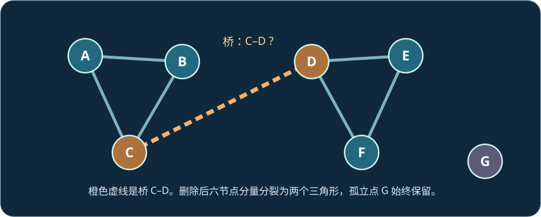

GRAPH DATA CONTRACTS / CONNECTIVITY / REPRODUCIBLE ANALYSIS
以两个三角形、一条桥和一个孤立点构造最小网络，完整建立数据语义、结构不变量、可复算统计与 NetworkX 分析协议。
1. 先问清楚这张图究竟是什么
图分析的第一步不是调用 nx.pagerank，而是定义节点、边、方向、权重、重复记录、时间窗口和缺失含义。例如，一行“用户 A 给用户 B 点赞”产生的是有方向、可重复、带事件时间的关系；如果未经解释就将它装进无向简单图，反向是否存在、点赞次数和时间先后会被丢失。另一方面，若业务语义是“参与同一会议”，也不能无条件将所有与会者两两连成有因果含义的边。
NetworkX 的 Graph 是无向图，允许自环但不保留平行边；DiGraph 有向，MultiGraph、MultiDiGraph 允许同一对节点之间存在多条边。在图表示转换中，孤立节点通常会被悄悄丢掉：如果仅由边列表创建图，未出现在任何边中的 G 节点不会自动出现。这个变化将直接影响节点总数、密度和分量数量。
| 原始关系 | 正确建模前先决策 | 错误简化的代价 |
|---|---|---|
| A 给 B 发送 5 次消息 | 有向事件/带权聚合 | 丢失时间与重复次数 |
| A 与 B 互为朋友 | 对称简单图是否有证据支持 | 虚构互惠关系 |
| 同一篇论文有 4 位作者 | 保留论文—作者二部图还是投影 | 投影会形成 6 条共同署名边 |
| 只知道 G 没有观测边 | 显式加入孤立节点 | 分母变化，孤立点消失 |
2. 黄金样本：两个三角形 + 一条桥 + 一个孤立点
构造 7 个节点 A、B、C、D、E、F、G。其中 A-B-C-A 和 D-E-F-D 各组成一个三角形，额外用 C-D 连接两个三角形；G 是孤立节点。共有 n=7、m=7：两个三角形各 3 条边，桥 1 条边。C–D 是桥，因为删掉它将使原先连通的六节点分量分裂成两个三节点分量。
初始图有 2 个连通分量：{A,B,C,D,E,F} 和 {G}，最大连通分量为 6。移除 C–D 后有 3 个分量：{A,B,C}、{D,E,F}、{G}，最大分量为 3。节点 C、D 的度从 3 降到 2，其他三角形节点的度为 2，G 的度为 0。

对无向、无自环简单图，密度为 2m/[n(n−1)]。初始为 14/(7×6)=1/3；删除一条桥边后变成 12/42=2/7。密度降低不意味着必然存在桥，分量变化也不等于全图平均路径的变化。图不连通时，直接调用 nx.average_shortest_path_length(G) 会失去全图连通的前提；应明示是只在最大连通分量中计算，还是报告可达节点对与不可达率。
交互实验：同一张图是否移除桥
保留孤立节点 G；这是一张无向简单图。
3. NetworkX 每项 API 的前提条件都写进实验协议
nx.number_connected_components(G) 只适合无向图；对有向图必须先选择强连通还是弱连通。nx.degree_centrality 对简单图按最大可能度 n−1 归一化，故有孤立点时其中心性是 0；但对多重图、自环可能出现不超过 1 的直觉失效。nx.betweenness_centrality 衡量最短路位置，不等于在真实社交网络中的信息传播因果效应。
带权图还需明确权重是距离还是强度。NetworkX 许多最短路径函数把 weight 作为路径成本；如果边权代表互动次数，数值越大通常代表“关系更强”，直接将其作为最短路径长度就可能反过来把强关系当作远距离。要么转换为正的成本（并说明公式），要么使用无权最短路径。负权甚至可能需要不同算法并产生负环问题。
| 分析问题 | 推荐接口 | 前提/陷阱 |
|---|---|---|
| 无向连通分量 | connected_components | 有向图需要 weakly/strongly_connected_components |
| 桥边识别 | bridges | 适用于无向图的相关定义；注意 MultiGraph 语义 |
| 节点度中心性 | degree_centrality | 归一化基于节点数；并非影响力 |
| 最短路径 | shortest_path_length | 明确有向、权重为成本及不可达处理 |
| 读写与复现 | read_edgelist / write_graphml | 节点标识类型、属性类型、版本化输入 |
4. 从边表读取到报告：应该有怎样的验证顺序？
建议用固定的分析流程：① 记录原始文件哈希、来源与使用权限；② 解析节点/边类型并检查非法 ID；③ 统一是否去重、保留自环、聚合多重记录；④ 显式添加全部节点，包括孤立点；⑤ 检查 n、m、度和分量数、方向及权重范围；⑥ 才计算中心性、社团或模型；⑦ 导出机器可读报告和质量证据。先画图再解释图形位置容易把布局算法产生的远近误当真实的图论距离。

在真实图中可以记录 JSON、GraphML 或 GEXF，但要避免把文件格式当成“科学验证”。GraphML 的节点类型和多种属性可能需要显示类型转换；导出再导入应检验节点集、边集和关键属性在预期格式下保持不变。
5. 原生 NetworkX 的完整入门代码
以下代码在已安装 networkx 的环境中创建这张精确图，执行内部断言并显示桥边与分量结果。指定版本示例：python -m pip install 'networkx>=3.3,<4'。若未安装该依赖，应先完成环境配置；课程的无依赖数值实验见下一段。
# 需要：networkx >=3.3, <4
import networkx as nx
nodes = list("ABCDEFG")
edges = [("A", "B"), ("B", "C"), ("C", "A"),
("D", "E"), ("E", "F"), ("F", "D"), ("C", "D")]
g = nx.Graph()
g.add_nodes_from(nodes) # 包含孤立点 G
g.add_edges_from(edges)
assert (g.number_of_nodes(), g.number_of_edges()) == (7, 7)
assert sorted(map(len, nx.connected_components(g))) == [1, 6]
assert set(map(frozenset, nx.bridges(g))) == {frozenset(("C", "D"))}
assert abs(nx.density(g) - 1 / 3) < 1e-12
h = g.copy()
h.remove_edge("C", "D")
assert sorted(map(len, nx.connected_components(h))) == [1, 3, 3]
assert abs(nx.density(h) - 2 / 7) < 1e-12
print("components before/after:", 2, 3)上面是实际的 NetworkX 教学脚本，不调用任何外部数据集。若执行的是不同主版本，仍要验证函数行为、运行环境与输出；当前测试范围包括这张玩具图，不能称为大型社会网络的指标复现。
6. 交叉验证：不要让被测试库同时当唯一裁判
可使用 Python 标准库的 BFS 根据显式邻接字典独立计算连通分量，再与 NetworkX 对照。如果被测试实现和所谓“oracle”共享同一个算法模块或共享错误的输入过滤逻辑，二者一致仍不能证明语义正确。最可靠的检验是用足够小、能手算的图规定节点集和边集，再同时比较独立算法结果、NetworkX API 与浏览器控件。
对于规模稍大的数据，固定节点排序、整数/字符串 ID 映射、随机布局的 seed 和输出哈希。实验种子只让随机过程可重现，不能消除采样偏差。多个随机种子、无重边/有重边、是否包含孤立点的反例应独立列入测试。
7. 分析解释：桥、中心和社团是什么，不是什么
删除 C–D 后连通性改变，是拓扑事实；它不说明 C 或 D 必然是现实组织中的“意见领袖”。真实互动可能有未观测边，采样窗口外也可能仍存在联系。介数高往往依赖最短路径假设，未必对应实际消息选择。绘制好看的社团色块不等于显著的社区效应，还要与随机对照、时间外数据及明确的领域假设比较。
到此，NetworkX 最重要的不是记住 API 名字，而是理解定义—手算不变量—数据契约—程序断言—外部解释之间的层次。先把 7 节点图分析正确，再扩大到真实数据。
原始文献、数据出处与实验边界
- NetworkX Graph 数据结构，用于核查对应数据、定义或 API 语义。
- NetworkX 连通分量 API，用于核查对应数据、定义或 API 语义。
- NetworkX 度中心性归一化，用于核查对应数据、定义或 API 语义。
- NetworkX Graph / MultiGraph 类型，用于核查对应数据、定义或 API 语义。
所有 SVG 均为本项目原创机制图；标为“合成”的例子不以真实社会数据作伪。未经执行的 NetworkX/数据库命令不宣称已运行，书中数据集摘要与本页脚本输出明确分开。